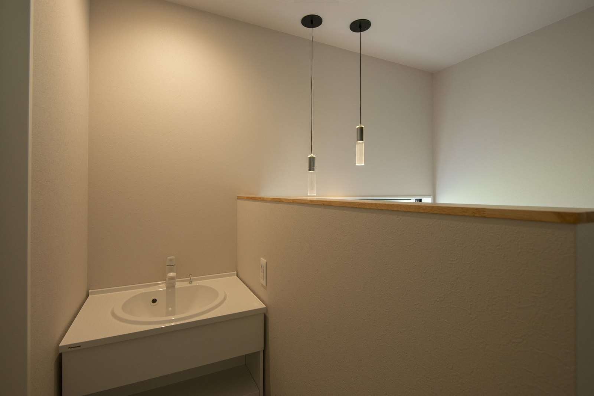
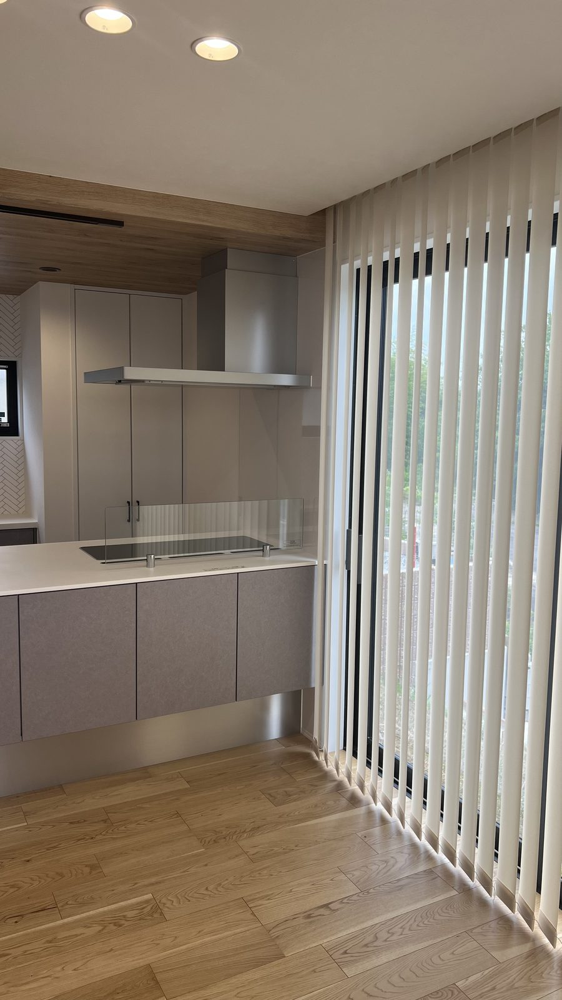
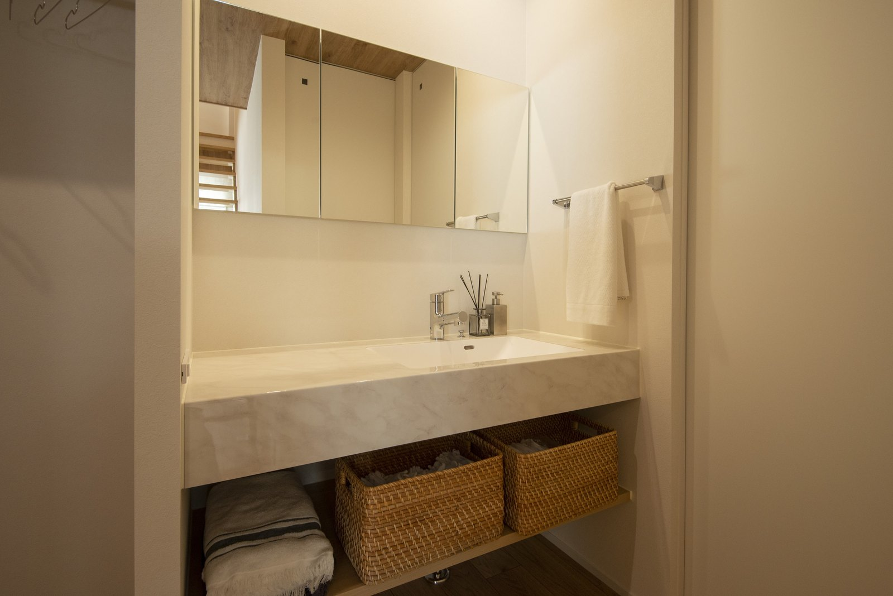

秋から冬にかけては、帰宅したら洗濯物が冷たく感じられる日もあります。奈良で家を建てるときは、外に干せない日を前提に、室内の置き場所も考えておきましょう。
専用室が広ければ使いやすいとは限りません。洗う、干す、乾かす、しまう。この流れを、家族の生活時間と一緒に考えます。
室内干しは、四つを一緒に決めます。
場所
濡れた物を運ぶ距離
広さ
洗濯物の間を空ける余裕
湿気
換気と除湿の方法
片づけ
乾いた物をしまう場所
洗う場所と干す場所を、近づける

写真では、洗濯機を置く区画の上に棚があります。洗剤を使う場所に置く考え方です。干す場所を別に設ける場合も、濡れた洗濯物を持って何歩進むのか、扉をいくつ開けるのかを確認します。
入浴や朝の身支度と時間が重なると、脱衣所や洗面所は混み合います。洗濯かごを置いた状態でも、人が通れる幅を残せるか、図面で見ておきます。
窓だけに頼らず、湿気の行き先を決める
洗濯物から出た水分は、室内の空気へ移ります。窓があっても、雨や寒さで開けにくい日があります。換気設備の位置と空気の通り道を、設計の段階で確認してください。
24時間換気は止めずに使います。除湿機を併用するなら、必要な広さに対応しているかを確認し、排水と手入れの方法も決めます。送風機は洗濯物の間に風を通す補助として使い、湿気を室外へ出す方法と組み合わせます。

カーテンなどで区切れる間取りは、生活の場を分ける方法の一つです。ただし、閉めた状態で空気が流れるかは別の確認が必要です。この写真だけで、乾燥設備や換気性能を判断することはできません。
物干しの長さは、洗濯量から考える
普段の一回分を干した状態で、使っている竿の長さを測ってみてください。厚手の服や寝具を洗う日も考え、詰め込まずに干せるかを見ます。床からの高さは、長い衣類が床につかず、腕を無理に上げずに届く位置が目安です。

この洗面台の横には、引き出しがあります。乾いたタオルなどを近くに戻す場合は、収納の位置も家事の移動を減らす手がかりになります。収納に入れるのは、十分に乾いたことを確かめてからです。
晴れの日と雨の日、両方を図面で試す
いつも外干しをする家庭も、雨の日や夜に洗う日の流れを図面で試してください。取り込んだ物を一時的に置く場所まで決めると、食卓やソファに洗濯物が残りにくくなります。
奈良の季節ごとの気温や湿度は、気象庁の奈良の平年値で確認できます。実際の乾き方は天候と住まい方で変わります。断熱・気密の考え方と、奈良の冬を考える記事もご覧ください。
よくある質問
日当たりのよい部屋なら乾きますか？
日当たりだけでは決まりません。洗濯物の間隔、空気の流れ、室内の温度や湿気も関係します。換気や除湿も考えます。
室内干しの専用室は必要ですか？
必須ではありません。洗濯量と家族の生活時間に合わせ、通路をふさがず干せる場所を確保できるかを考えます。
除湿機を使うなら換気を止めますか？
24時間換気は止めずに使います。除湿機は取扱説明書に従い、排水や手入れが無理なくできる場所に置いてください。

奈良の工務店シバサンホームで、
土地さがし・資金計画・打合せの窓口をしています。
モットーはスピード・誠実さ・楽しさ。